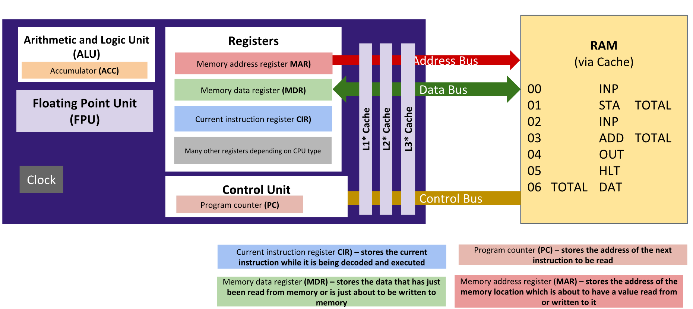
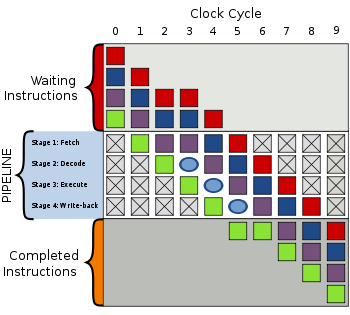

Pipelining and Parallel Processing
Flynn's Taxonomy
Instructions vs Data Streams
- SISD: Single instruction Single Datastream - Single core CPUs
- SIMD: Single Instruction Multiple Datastreams, Vector/Array processors - GPUs (The same instruction on lots of data)
- MIMD: Multiple Instructions Multiple Datastreams - Multi core CPUs
- MISD: Multiple instructions on one dataset - Not really used/unusual, but possible
Fetch-Decode-Execute Cycle

FETCH
- 1. Address of the next instruction is taken from the PC to the MAR
- 2. The Control Unit loads the address onto the address bus and sends a signal to main memory to read the instruction held at the address
- 3. The instruction is passed to the data bus and copied to the MDR. The PC is incremented to hold the next instruction address
- 4. The contents of the MDR are copied to the CIR
DECODE
- 5. The instrucion in the CIR is decoded by the Control Unit and split into opcode and operand
- 6. If the operand holds an address it is copied to the MAR
EXECUTE
- 7. The instruction (opcode) is carried out on the operand
Pipelining
Pipelining is a process in which a CPU can complete multiple instructions at once.
This means the CPU does not have to wait for one instrucion to finish before starting work on another.
This optimises the Fetch-Decode-Execute cycle, resulting in much faster processing of instructions.
The instructions are queued up, then begin executing. There are several stages of instruction execution,
ranging from architecture to architecture. Modern x86 chips can have up to 20 pipeline stages.
The RISC pipeline has five stages, IF, ID, EX, MEM and WB, these refer to Fetch, Decode, Execute,
Memory Access and Register Writeback, respectively. Each of these must be carried out on every instruction sent to the CPU, in order.
Pipelining is applied after each stage to queue up the next instruction, as can be seen in the diagram to the right.
During each iteration, one instruction is executed, next is decoded, the following is fetched, and so on.

Scheduling
When supplied a list of tasks, processors need to be able to organise and deal with them in the most efficient manner.
Without scheduling, long tasks would occupy the CPU and prevent multi-tasking and other applications from running effectively.